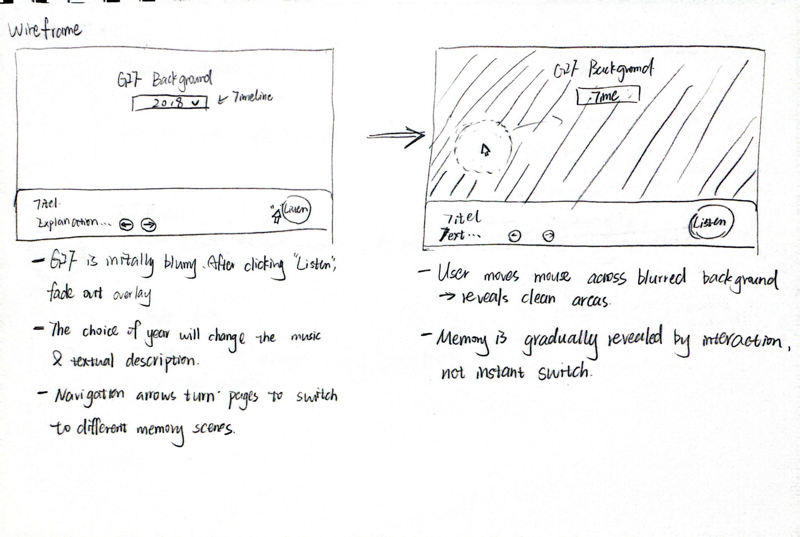
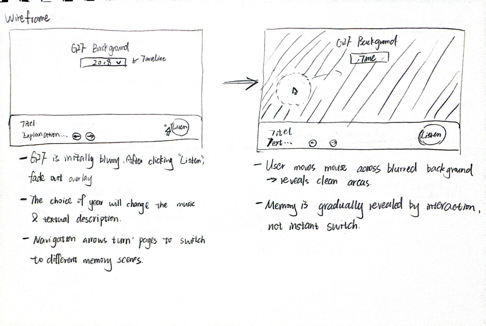

Conceptual Response
My prototype is an interactive, memory–exploration website with five scenes, each representing a different life stage. The entry state is fully blurred; users can click to “erase” the blur and reveal the clear background GIF, or press Listen to reveal everything and start music.
References
-
Local Time
This website has given me the inspiration that a page can be blurry at the beginning and then become clear after clicking a button.
-
Chrome Experiment #1000
This website gave me the idea of designing to erase the blur layer after clicking on the page, adding some interactive designs to the website.
 

Implementation
Built on the provided audio system using Tone.js for sound. A top blur layer masks a background GIF; clicks add reveal masks, while the Listen button clears the layer and starts music. For the advanced technique, I’m using Date.now() to relate scene selection to time (e.g., year–memory mapping & progress stamping).
System Map
- User Input (click / Listen / year)
- Blur Layer → updates reveal mask
- Tone.js → sound effects / background music
- Date.now() → time mapping & last-updated stamp
- Output → Clear/blur visuals + audio feedback
Peer User Testing
Prompts:
- 1. Was it clear to you what actions (clicking the screen or pressing the Listen button) would do on this site?
- 2. Did you find it easy to control the site and understand how to move from the blurred state to the clear state?
Reflection: Most users found the Listen button clear and easy to use, but several did not realize that clicking on the blurred screen could also reveal content and play audio. The year dropdown and arrows were confusing, as testers expected clearer visual changes when selecting them. A few also wondered if it was possible to return to the blurred state. From this feedback, I learned that while the core idea is engaging, I need to add clearer signifiers and feedback—especially for the screen click and year navigation—to make the interaction more understandable.